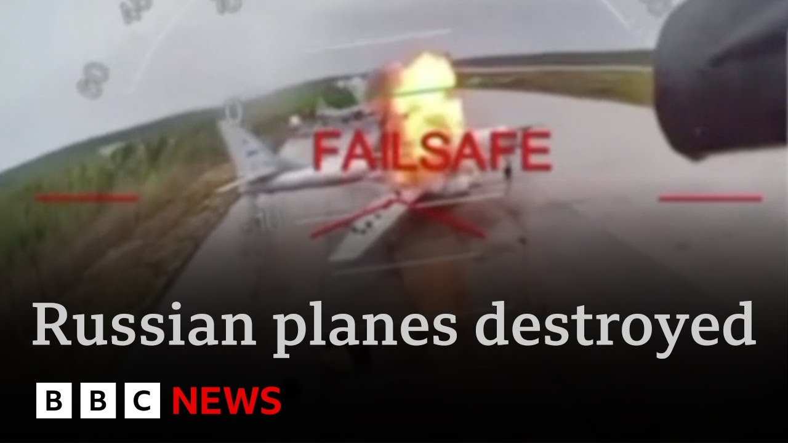

【乌克兰无人机袭击俄罗斯多个空军基地 摧毁数十架战机 | BBC新闻】
Summary: Ukraine launched its most audacious and wide-reaching drone attack on Russian military air bases since the start of the war. Using 117 drones smuggled deep into Russia, Ukraine struck at least four airfields across the country, including strategic bomber bases thousands of kilometers from the frontline. The operation, codenamed “Spider’s Web” and personally overseen by President Zelensky, reportedly took 1.5 years to prepare and inflicted $7 billion in damage, destroying about one-third of Russia’s cruise missile-capable bombers.
摘要： 乌克兰发动了战争以来最大胆、最广泛的一次无人机袭击，代号为“蜘蛛网”。在泽连斯基总统亲自指挥下，乌军动用了117架无人机从俄境内深处发动攻击，袭击了俄境内至少四个军事机场**，包括战略轰炸机基地，距离前线数千公里。据称此次行动筹备耗时一年半，造成俄方约70亿美元损失，摧毁了超过三分之一的可携带巡航导弹的轰炸机。

⏱️ Estimated Reading Time: 9 min
It is one of the most daring and devastating Ukrainian attacks on Russian troops since the start of the war.
这是自战争爆发以来乌克兰对俄军最大胆、最具破坏性的袭击之一。
Tonight, President Zalinski said his forces used 117 drones in strikes on Russian air bases from deep inside Russia itself, targeting war plananes, including strategic bombers.
今晚，泽连斯基总统称其部队使用117架无人机从俄境内深处袭击俄空军基地，目标包括战略轰炸机在内的战机。
Now, the scale of the operation is remarkable with the strikes hitting at least four airfields from western Russia across to Moscow and reaching the country's far east.
此次行动规模惊人，袭击覆盖从俄西部到莫斯科乃至远东的至少四个机场。
thousands of miles from Ukraine.
距乌克兰数千英里。
The operation cenamed Spider's Web comes on the eve of planned peace talks between Ukraine and Russia in Turkey tomorrow.
代号“蜘蛛网”的行动恰逢乌俄计划次日于土耳其举行和谈前夕。
Paul Adams has our top story from Kief.
BBC记者保罗·亚当斯从基辅发回头条报道。
Far from Ukraine's borders, an attack of astonishing audacity.
远离乌克兰边境，一场惊人胆识的袭击。
Russian strategic bombers picked off one by one by a fleet of drones.
俄战略轰炸机被无人机群逐一击毁。
Ukraine calling this Operation Spid personally overseen by President Zalinski.
乌方称此行动由泽连斯基亲自监督。
One of Kiev's boldest attacks so far, a reminder, despite Russia's overwhelming strength in numbers, that Ukraine is a resourceful, determined enemy.
这是基辅迄今最大胆的进攻之一，表明尽管俄军数量占优，乌克兰仍是足智多谋的顽强对手。
Sources say this took a year and a half to prepare.
消息称行动筹备耗时一年半。
Dozens of drones smuggled into Russia, stored on wooden pallets, loaded onto trucks, driven to distant air bases, and launched remotely.
数十架无人机被偷运至俄境内，存放于木托盘，装车运至偏远空军基地后远程发射。
Swarms of drones picked up on social media from Siberia to the Arctic Circle.
社交媒体捕捉到从西伯利亚到北极圈的无人机群画面。
At a petrol station north of Ikutsk, a glimpse of the operation in progress.
伊尔库茨克北部的加油站拍到了行动过程。
With smoke already rising behind, a drone emerges from the truck and heads off to join the attack.
背景浓烟升起时，一架无人机从卡车飞出加入攻击。
Moments later, another and gunfire as police officers try to bring it down.
片刻后又一架起飞，警察开枪试图击落。
[Applause] [Music]
[掌声][音乐]
Ukraine claims to have done a staggering $7 billion dollar worth of damage and knocked out a third of the planes Russia uses to deliver cruise missiles.
乌方称造成70亿美元损失，摧毁俄军三分之一的巡航导弹载机。
We know exactly whom we are dealing with.
我们清楚对手是谁。
We will defend ourselves by every means available to us, available to Ukraine, available to Ukrainians.
我们将用一切可用手段自卫。
Not for a single moment did we want this war.
我们从未想要这场战争。
We offered the Russians a ceasefire.
我们曾向俄方提议停火。
Earlier, a different kind of wreckage.
早些时候，另一处残骸景象。
This, the Ukrainian city of Zaparisia after the country suffered another major drone and missile attack.
乌克兰城市扎波罗热遭新一轮无人机导弹袭击。
Elsewhere, 12 Ukrainian soldiers were killed at a training base.
另一训练基地12名乌士兵丧生。
The head of Ukraine's land forces tendering his resignation.
乌陆军司令提交辞呈。
What chance then for another round of peace talks set to take place in Istanbul.
即将在伊斯坦布尔举行的新一轮和谈前景如何？
Russian and Ukrainian delegations are expected to be there, but after 24 hours of mayhem, the omens for a breakthrough do not seem good.
俄乌代表团将出席，但经过24小时混乱，突破迹象渺茫。
Paul Adams, BBC News.
BBC记者保罗·亚当斯报道。
We're going to get more from Paul in a moment, but as he was just saying, this sophisticated attack was more than a year in the planning.
稍后继续跟进保罗的报道，但如他所言，这次精密袭击策划超一年。
Ellie Price is with me now.
艾莉·普莱斯正在现场。
What more do we know about operation spiders web and its targets, Ellie?
关于“蜘蛛网”行动及其目标还有哪些信息？
Well, Clive, as Paul said, it was an attack astonishing in its audacity on multiple military sites across Russia.
克莱夫，如保罗所说，这次袭击以惊人胆识同时打击俄境内多处军事设施。
What we know is that the Elena air base near Mansk in the northeast of Russia near Finland was hit.
已知靠近芬兰的俄东北部曼斯克附近埃列纳空军基地遇袭。
There are also attacks to the southwest and northeast of Moscow.
莫斯科西南与东北部也遭袭。
and far to the east all the way over here over 4,000 kilometers from the front line deep in Siberia where it was confirmed that this remote air base in Bellena was hit.
远东西伯利亚深处距前线4000公里的别列纳偏远空军基地确认遇袭。
And it's here that this incredible footage was captured showing the destruction of planes on the tarmac.
此处拍到惊人画面显示停机坪战机被毁。
These are the drones that were used in the attack.
这些是袭击所用无人机。
Thought to be quadcopters with four rotors, relatively cheap and domestically made.
据信为四旋翼无人机，造价低廉且国产。
The bombs they carried didn't need to be big if they were targeted so precisely.
若定位精准，其携带炸弹无需大型。
Ukraine says 117 drones were used, each with its own pilot.
乌方称动用117架无人机，每架配备操作员。
Sources say the drones were hidden in custom-made wooden crates that were taken over the border and driven on trucks to near the targets and then launched remotely.
消息称无人机藏于定制木箱越境，卡车运至目标附近后远程发射。
There's certainly been degree of mythology in Russia that the motherland is safe and no enemy will be able to harm it.
俄罗斯长期存在祖国安全无虞的神话。
Well, Keev has shown that that's not true.
基辅证明此说不实。
They can reach anywhere.
乌军可打击任何地点。
The fact that Ukraine was striking thousands of kilometers away from the front line means basically Russian military planners now their their mind has to just be paranoid from the outside.
乌军打击距前线数千公里目标，意味着俄军事策划者需对外界保持高度警惕。
Ukraine says it's destroyed 40 Russian bombers, more than a third of the Russian fleet capable of carrying cruise missiles.
乌方称摧毁40架俄轰炸机，超俄军三分之一的巡航导弹载机。
The aircraft damaged include the Tupalev TU95 strategic bomber that can launch up to eight missiles.
受损机型包括可发射8枚导弹的图-95战略轰炸机。
The Tu22 longrange bomber was also targeted as well as the A50 seen as the eyes and ears in the sky, Russia's early warning and control aircraft.
图-22远程轰炸机及俄空天预警指挥机A-50也遭锁定。
Now, the White House tonight said they didn't know about the attack beforehand.
白宫称未获事前通知。
Operation Spiderweb was overseen by President Zalinski himself.
“蜘蛛网”行动由泽连斯基亲自指挥。
He said Ukraine had an operation HQ inside Russian territory located right next to an office of Russia's secret service now and and said that the coordinated attack was achieved solely by Ukraine Clive.
他称乌方在俄境内设立行动指挥部，紧邻俄情报机构办公室，强调此次协同攻击纯由乌克兰完成。
All right, Ellie, thank you.
好的，艾莉，谢谢。
Ellie Price there.
艾莉·普莱斯报道。
Uh let's rejoin Paul Adams who's live in K for us now.
现在连线基辅现场的保罗·亚当斯。
Paul, this is a big deal.
保罗，此事重大。
No question about it.
毋庸置疑。
And the timing um surely no coincidence given those peace talks uh that are due to take place in Turkey tomorrow.
时机绝非巧合——乌俄和谈定于明日土耳其举行。
Yeah, Clive, look, it is pretty hard to exaggerate the the sheer audacity of what the Ukrainians have just done.
克莱夫，乌方行动之大胆难以言表。
You know, we're used to stories of ingenuity and determination, the the sinking of the Mosur warship in 2022, the truckborne attack on the Kirch Bridge the same year, and just a month ago using missiles mounted on maritime drones to shoot down a Russian jet.
我们熟知乌军的巧思与决心——2022年击沉莫斯科号、卡车炸弹袭击克里米亚大桥、上月海上无人机导弹击落俄战机。
These are all extraordinary feats of engineering and enterprise, but what we've seen today tops all of that and the Ukrainians are not surprisingly cocka hoop.
这些工程与行动壮举均被今日行动超越，乌方欢欣鼓舞不足为奇。
But there is a political message here.
但此事含政治信号。
A colleague of ours from the Ukrainian service said that he was recently in conversation with a member of the government who told him that the problem with Washington was that the Americans had already decided that Ukraine had lost and that the Trump administration's entire strategy was based on that assumption.
乌克兰同事称，某政府成员透露美方已判定乌方战败，特朗普政府战略皆基于此。
Well, as the negotiators head back to Istanbul for another round of negotiations over a ceasefire, what Ukraine is saying loudly and emphatically is, "If you think we're done, think again.
当谈判代表再赴伊斯坦布尔商讨停火时，乌方明确宣告：“若认为我们败局已定，请三思。
Donald Trump may famously think we do not have any cards to play, but look what happened today.
特朗普或许宣称我们无牌可打，但请看今日战果。
We certainly do."
我们手握王牌。”
All right, Paul, thank you for that.
好的，保罗，感谢报道。
Paul Adams, they're live in Kiev.
BBC记者保罗·亚当斯基辅现场报道。